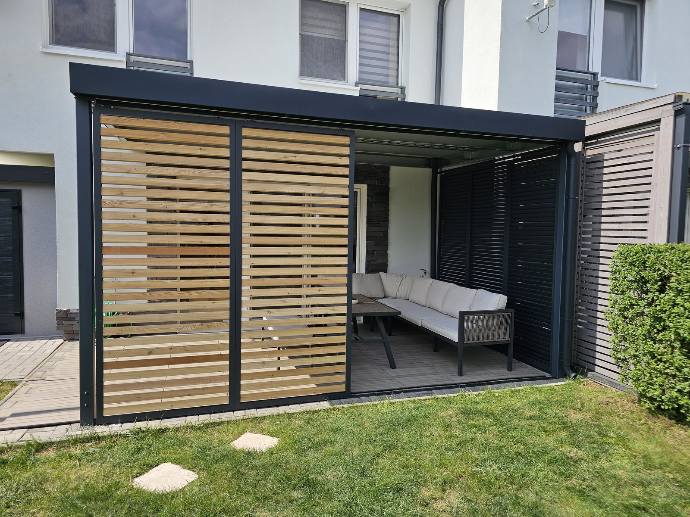

ZIP roleta K130
Tkanina vedená v lištách
Zips drží tkaninu v bočnej lište, takže sa roleta nevyfúkne ako markíza. Motor a diaľkové ovládanie.
Vedenie
zips v lište
Ovládanie
motor, diaľkové

ZIP roleta vedená v bočných lištách, pevné lamelové clony alebo brisoleje. Riešime tienenie terasy aj presklených stien, ktoré sa v lete prehrievajú.
Rozmery a hranice
Od tkaniny, ktorá sa navinie do kazety, po pevnú stenu. Každé riešenie má inú najväčšiu šírku — podľa nej vyjde, koľko polí bude terasa potrebovať.
Prejsť na nezáväznú ponukutkanina vo vedení
Materiál
sklolaminát s PVC
kazeta 120 × 130 mm
Jedno pole najviac
Výška 3 000 mm
Šírka 6 500 mm
Ovládanie
motor, diaľkové ovládanie,
snímač vetra ako doplnok
lamely v hliníkovom ráme
Materiál
hliníkový rám
výplň drevo alebo hliník
Jedno pole najviac
Výška 3 000 mm
Šírka 1 400 mm na panel
Ovládanie
ručne, panel beží
na kolieskach
drevené laty
Materiál
sibírsky smrekovec
Jedno pole najviac
Výška podľa konštrukcie
Šírka 4 000 mm
Ovládanie
žiadne — stena je pevná
zateplený panel
Materiál
ISO panel s izolačným jadrom
Jedno pole najviac
Výška podľa konštrukcie
Šírka 6 000 mm
Ovládanie
žiadne — stena je pevná
posuvné a skladacie
Materiál
kalené sklo 10 mm
Jedno pole najviac
Výška podľa konštrukcie
Šírka podľa počtu panelov
Ovládanie
ručne, zámok ako doplnok
Sú to hranice jedného poľa podľa katalógu výrobcu — koľko polí treba, vyjde zo zamerania. ZIP roleta má priehľad 3 %: cez deň vidíte von, zvonku dnu nie, a zips drží tkaninu bez škár aj vo vetre.
Prejsť na nezáväznú ponukuZ čoho je to postavené
Každý rieši niečo iné: roleta zatiahne celú stenu, lamely tienia natrvalo a brisoleje pustia zimné slnko a zastavia letné.
Prejsť na nezáväznú ponukuZIP roleta K130
Zips drží tkaninu v bočnej lište, takže sa roleta nevyfúkne ako markíza. Motor a diaľkové ovládanie.
Vedenie
zips v lište
Ovládanie
motor, diaľkové

Lamelové clony L44
Ťahokov L44-ES alebo hliníkové lamely L44-ALU 20/20. Tienia a púšťajú vzduch.
Ťahokov
L44-ES
Hliník
L44-ALU 20/20

Brisoleje E300
Zastavia letné vysoké slnko, zimné nízke prepustia. Bez pohyblivých častí — nie je sa čo pokaziť.
Poloha
vodorovne pred oknom
Pohyb
žiadne pohyblivé časti
Čo je v cene
Kde čo dáva zmysel
Tienenie sa nevyberá podľa katalógu, ale podľa svetovej strany a podľa toho, či vám prekáža slnko, vietor alebo susedov pohľad.
ZIP roleta na západnú a východnú stranu zastaví slnko, ktoré ide pod strechu. Zatiahne sa aj čiastočne, nemusí ísť po zem.
Priehľad
3 %
Zatiahnutie
aj čiastočné

Sklenené panely G1 posuvné, G2 skladacie. Zastavia prievan, výhľad nechajú; v lete sa dajú odsunúť úplne nabok.
G1
posuvné
G2
skladacie

Posuvné panely H50 s drevenou alebo hliníkovou výplňou. Lamely prepúšťajú vzduch, nie pohľad.
Výplň
drevo aj hliník
Poloha
posuvné aj pevné

Pevná stena FW25 z dreva alebo FI30 z ISO panela, po celej strane alebo len po časti. Najlacnejšie riešenie, keď viete, kadiaľ fúka.
FW25 drevo
do 4 m
FI30 panel
do 6 m

Tienenie · Soltec
ZIP roleta má tkaninu vedenú v bočnej lište, takže sa nevyfúkne ako markíza. Posuvné a skladacie panely sú z dreva, hliníka aj skla, lamelové clony tienia natrvalo a púšťajú vzduch.
3 %
priehľad tkaniny ZIP rolety
6,5 m
najväčšia šírka rolety
Z našich montáží
Rovnaké systémy, aké používame na pergolách — dajú sa objednať aj samostatne.

ZIP roleta stiahnutá cez celú stranu terasy
Detail vedenia ZIP tkaniny v bočnej lište
Lamelová clona pri terase

Drevené lamelové tienenie pri krytej terase

Pergola so zatiahnutými ZIP roletami
ZIP rolety na dvoch stranách pergoly
Na stiahnutie
Katalóg je od výrobcu Soltec, v pôvodnom jazyku. Čokoľvek z neho radi vysvetlíme po slovensky.
Časté otázky
Nenašli ste odpoveď? Zavolajte nám, poradíme aj bez záväzku.
+421 948 482 266Cenu určuje typ výplne, rozmer poľa a ovládanie: motorizovaná ZIP roleta stojí viac než pevná drevená stena, sklenené panely viac než ZIP. Napíšte nám rozmer poľa a to, čo vás na terase ruší: cenu pošleme do 24 hodín. Zameranie je zadarmo a doprava aj montáž sú v cene.
Tkanina je vedená zipsom v bočných lištách, takže sa nevytrhne ako klasická markíza. Pri silnom vetre ju snímač vetra zatiahne sám, ak si ho doplníte.
Technicky áno, ak má konštrukcia priestor na vedenie. Počítajte však s tým, že diely idú na objednávku zo Slovinska a ide o samostatnú dodávku aj druhú montáž — vyjde to podstatne drahšie než objednať tienenie spolu s konštrukciou. Pri zameraní preto povieme rovno, čo sa oplatí zahrnúť do návrhu.
Cez deň áno — tkanina má priehľad 3 %, takže zvnútra vidíte do záhrady, zvonku dnu prakticky nie. Po zotmení sa to obráti, ako pri každej tkanine: keď máte vnútri svetlo, zvonku vás vidno.
Do hornej kazety 120 × 130 mm, ktorá sa osádza do rámu konštrukcie. Keď je roleta vytiahnutá, z terasy je vidieť len tenkú lištu.
Áno. Motor je štandard, k nemu sa dá pridať diaľkové ovládanie, vypínač na stene alebo snímač vetra a slnka — roleta sa potom zatiahne a vytiahne sama, aj keď nie ste doma.
ZIP roleta je tkanina, ktorá sa navíja a zmizne — má zmysel tam, kde chcete tieniť len občas. Posuvný panel H50 je pevná lamelová stena, ktorá sa odsúva nabok; tieni trvalejšie, prepúšťa vzduch a vyzerá ako súčasť stavby.
Na hliníkové systémy Soltec áno. Na cudziu konštrukciu sa to posudzuje individuálne — musíme vidieť, či rám unesie kazetu a či sa dá vedenie ukotviť. Pošlite nám fotku, povieme vám to obratom.
Cenová ponuka zadarmo
Terasa, presklená stena alebo okno — podľa orientácie na svetové strany navrhneme, čo dá najväčší efekt.
Ozveme sa vám do 24 hodín. Ak sa dovtedy nikto neozve, radšej zavolajte — mohlo sa stať, že dopyt k nám nedošiel. Takto to bude pokračovať:
Fotky, ktoré ste vybrali, pošlite prosím e-mailom — formulár ich k nám neprenesie. Poslať fotky na obchod@koverta.sk
Súri to? +421 948 482 266 · obchod@koverta.sk
Server nám nevrátil odpoveď, takže nevieme povedať, či dopyt prešiel. Nečakajte na nás — ozvite sa priamo, vybavíme to hneď: